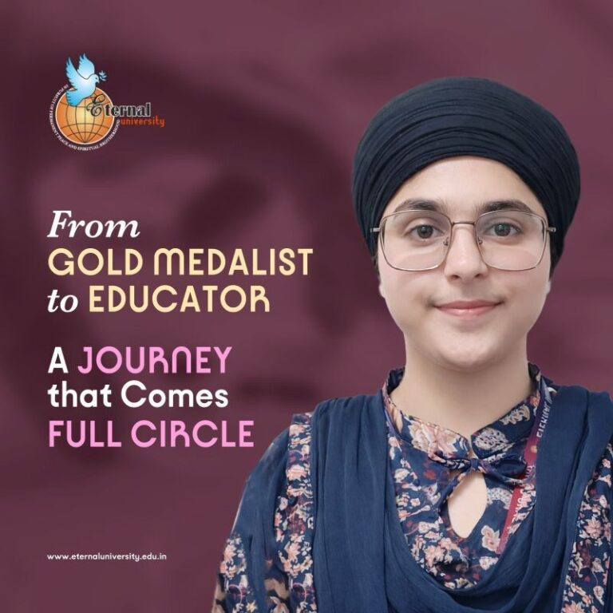
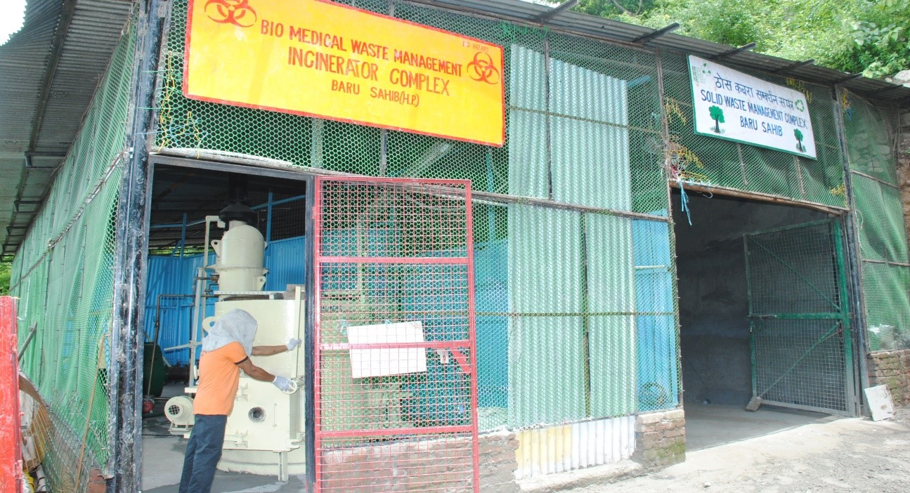
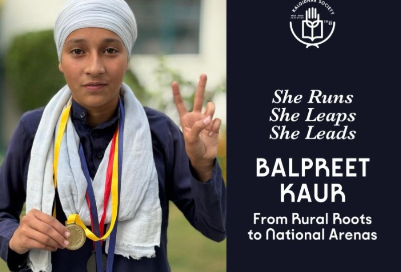
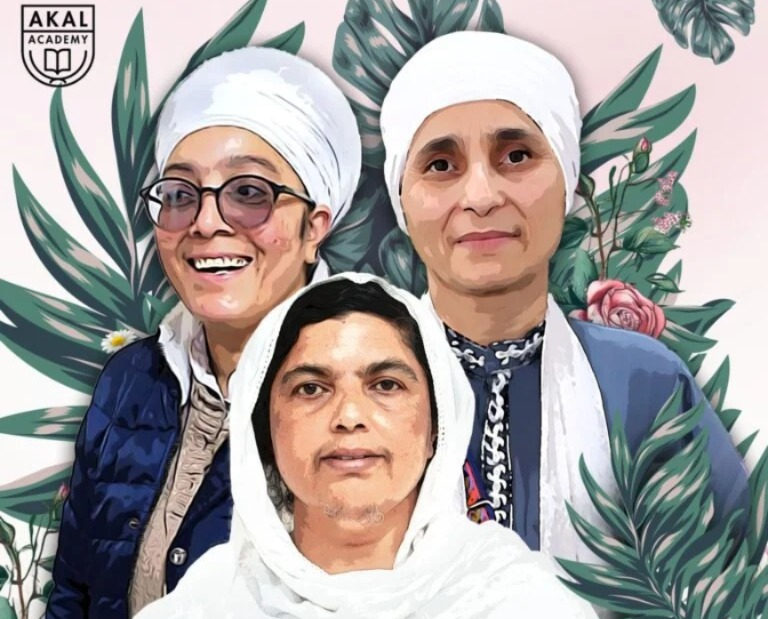

SUCCESS STORIES
Stories Behind the Impact
Baru Sahib is not a collection of projects. It is a circular ecosystem — education, environment, health, and technology that compound each other's impact.

SHINNING STARS
From Farmer's Fields to JEE Success
Navpreet Kaur grew up on a farm with limited access to coaching or resources. Through Baru Sahib's AIRWE programme, she secured a 91 percentile in JEE — proving that geography and background are not destiny when quality education is within reach.
Explore Full Story →150,000+
Students Impacted
80+
Villages Reached
35+
Years of Service
100+
Success Stories

Healing the Hills of Sirmaur
Through Akal Charitable Hospital, Baru Sahib delivers quality healthcare and telemedicine services to remote hill communities.
Explore Full Story →
From Scholar to Mentor
From gold-medalist scholar to mentor, this inspiring journey demonstrates how education empowers women to lead and uplift communities forward.
Explore Full Story →
From Sunshine to Success
Thousands of solar panels across Akal University reduce carbon emissions while powering sustainable learning environments for rural youth.
Explore Full Story →
Wealth From Waste
This innovative recycling unit transforms massive piles of institutional waste paper into beautiful, eco-friendly utility stationery for local campuses.
Explore Full Story →
From Home to Paralympic Glory
Defying severe cerebral palsy limitations, resilient Babanpreet Kaur smashed societal expectations, becoming a national parasports champion.
Explore Full Story →
Empowering Rural Women
This vocational center equips underprivileged village women with tailoring skills to establish independent, thriving and sustainable households.
Explore Full Story →